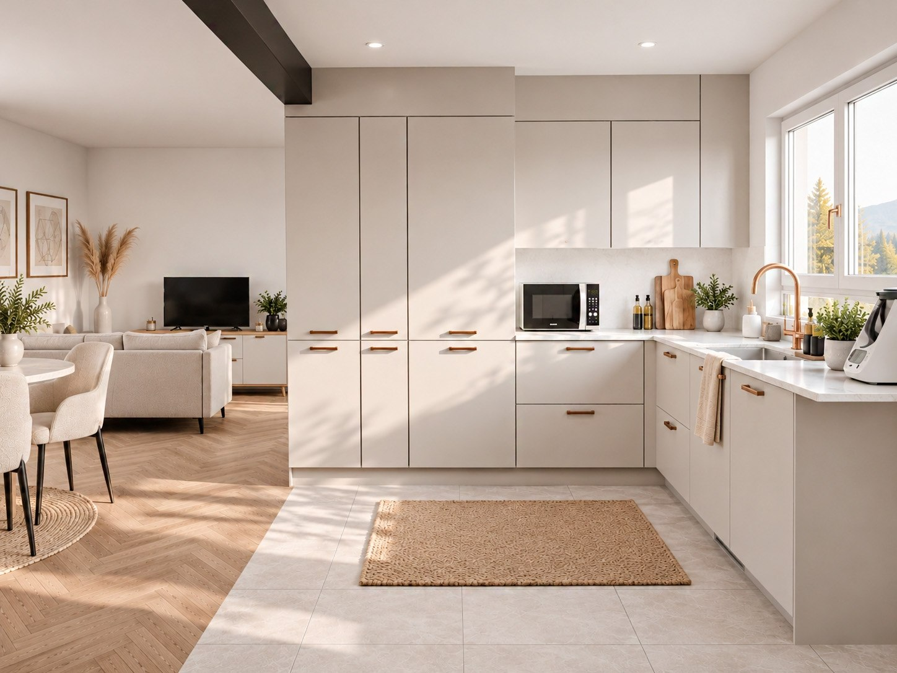
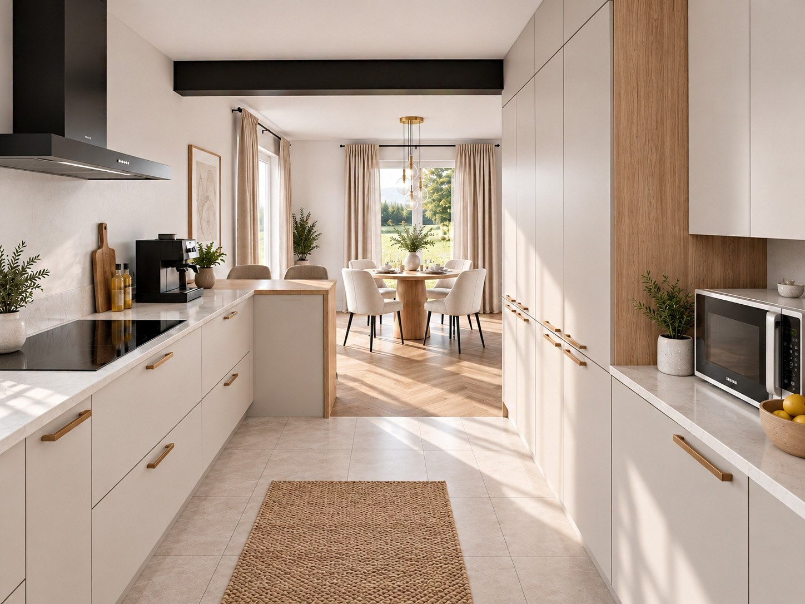
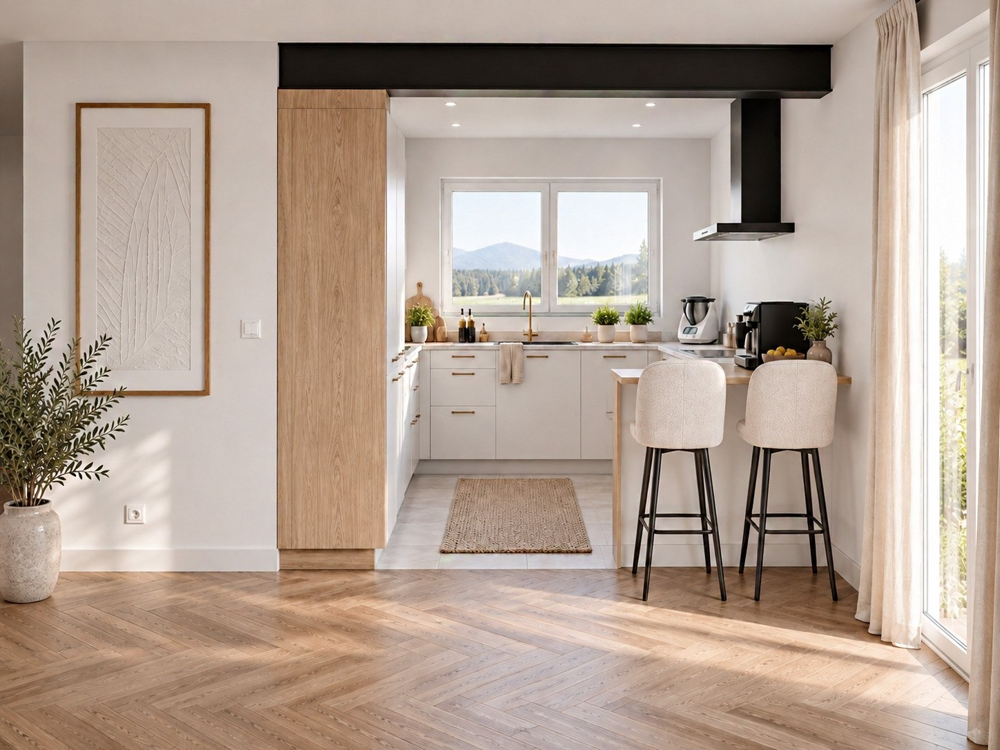

Residential interior · Kitchen & living area
A Study in Light & Balance

Concept
The project explores the relationship between natural light, colour and spatial functionality.
Set within a bright residential interior with generous glazed openings, the design focused on creating a calm and cohesive atmosphere without overwhelming the space.
The existing kitchen layout was retained, allowing the design approach to concentrate on two key aspects: developing a balanced colour palette and improving the ergonomics of the adjoining living area.
Colour & Light
With abundant natural daylight as a defining feature of the interior, the colour palette was carefully considered to preserve the feeling of brightness and openness.
Soft, understated tones create visual continuity throughout the space, allowing natural light to become an integral part of the composition.
The result is a light and balanced atmosphere, where colours complement the architecture rather than compete with it.

Spatial Planning
Particular attention was given to the living area, where the existing furniture arrangement limited comfortable circulation and everyday functionality.
The revised layout introduces a more intuitive organisation of the space, improving movement between the different areas while creating a more inviting and comfortable setting for everyday life.
Each element contributes to a clearer spatial composition, with a considered balance between openness, comfort and practical use.



Atmosphere
The overall approach is guided by simplicity, lightness and visual harmony.
Rather than introducing strong contrasts or dominant decorative elements, the project relies on a restrained palette and thoughtful spatial organisation.
A bright, welcoming interior where natural light, balanced colours and improved functionality come together to create a more comfortable way of living.